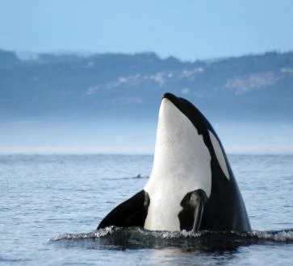
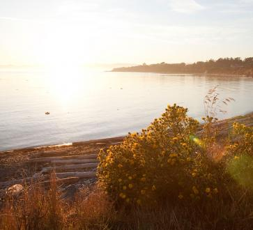
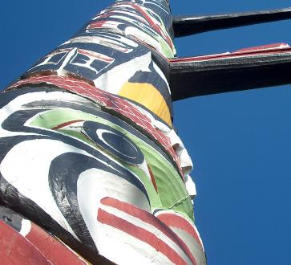
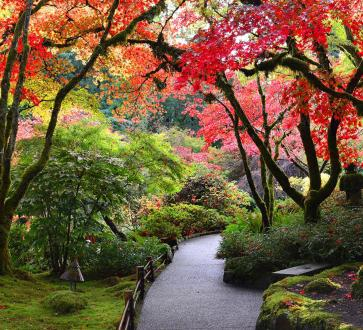
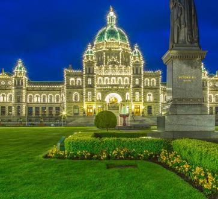

MAKE YOUR VISIT AS BUSY OR LAID BACK AS YOU’D LIKE
Easily explorable. Endlessly entertaining. Few places are as full of life as Victoria. Strongly tied to the land and sea, the oldest city in the Pacific Northwest proudly offers everything a friendly, exciting and welcoming destination should.
Escape your everyday with scenic Inner Harbour strolls, centuries-old historical sites, superb local coastal cuisine, and a thriving arts and cultural scene. Victoria is the ideal year-round playground for outdoor adventure enthusiasts, and a warm, welcoming and multicultural city.
-

Attractions
Tour the famous Butchart Gardens, discover beautiful Craigdarroch Castle, and feel the pulse of Canada’s oldest Chinatown—truly a hidden gem. Or escape to the water with world-class whale watching, kayaking, fishing and sailing. There’s no shortage of ways to make your Victoria visit truly unforgettable.
-
COMICS, GAMES, PLAY & COLLECTIBLES
Imaginations: Engage. From classic, time-tested toys and games to modern technology and cutting edge gaming, Victoria’s vibrant fan culture and specialized stores attract the creatively inclined of all ages from across the Pacific Northwest. As a hub of innovation and exploring new frontiers, Victoria prides itself it being an open, inspired and welcoming community.
-

BEACHES & LAKES
Surrounded by the sea is a perfect place to be. With a vast network of bays, coves, beaches and lakes—plus breathtaking views of the rugged pacific coast, Strait of Juan de Fuca, and Olympic Mountains—there are countless places to have fun on the water surrounded by stunning natural beauty.
-

ARTS, CULTURE & HISTORY
Explore the past and embrace the exciting present. Being the oldest city in the Pacific Northwest has major advantages.Vancouver Island and Victoria’s rich and fascinating history is rooted in Indigenous culture stretching back thousands of years, and British and Asian traditions since the mid 1800s. These influences echo proudly through Victoria’s amazing architecture, heritage sites, museums, gardens, galleries, markets and cultural celebrations.
-

GARDENS & PARKS
The Greater Victoria area, nestled in beautiful, rugged west coast terrain, is home to dozens of gardens and provincial, regional and municipal parks, including some of the most famous in Canada. As early as February, blooms spring up across the Victoria while much of Canada is still covered in snow. The city also has a colourful annual hanging basket tradition to welcome the summer season that dates back 75 years.
-

GOLF VICTORIA
A golfer’s paradise with a pleasant climate and breathtaking coastal seascapes, Victoria and Vancouver Island draw golfers from around the world to experience their beautiful and challenging courses. Victoria is also the gateway to the Vancouver Island Golf Trail—a 250-kilometre-long network of 14 scenic courses. For both beginners and experts, Victoria offers golf experiences with some of the best vistas on earth.
-
NIGHTLIFE & ENTERTAINMENT
Victoria’s welcoming island atmosphere extends well into the evening to create an exciting nightlife. Enjoy performing arts, live theatre, opera, dance, live music, films and over 100 annual festivals. If you’re thirsty, Victoria has lively craft cocktail and beer scenes driven by talented, passionate mixologists and brewmasters focused on fresh, local and inspired ingredients, plus an extraordinary assortment of restaurants.
-
SPORTS & OUTDOORS
Victoria combines the best of land and sea to create a perfect island playground for adventurous outdoor enthusiasts.A year-round temperate climate, rugged west coast shores and mountains, lush rainforest canopy and pacific breezes offer a natural environment tailor made for everything from hiking, cycling and kayaking, to diving, fishing, picnicking and even ziplining above the treetops.
-

STATUES & LANDMARKS
As the province’s capital, Victoria is home to the sprawling Parliament Buildings, constructed in 1898. Structures like the imposing CPR Steamship Terminal Building speak to the city’s historical significance and Thunderbird Park is home to colourful carved totem poles of Vancouver Island’s First Nations.
-

ROYAL TREATMENT
Victoria has hosted several Royal Visits, including Queen Elizabeth and, most recently, William and Kate, Duke and Duchess of Cambridge, during their Royal Tour in September 2016. Easily create your own royal experience by exploring landmarks and historical sites, museums, Victoria’s boutique shopping scene, or indulging in royal treatment at the Fairmont Empress.